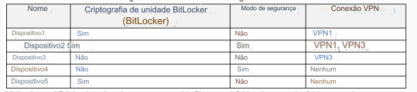
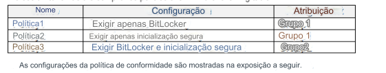
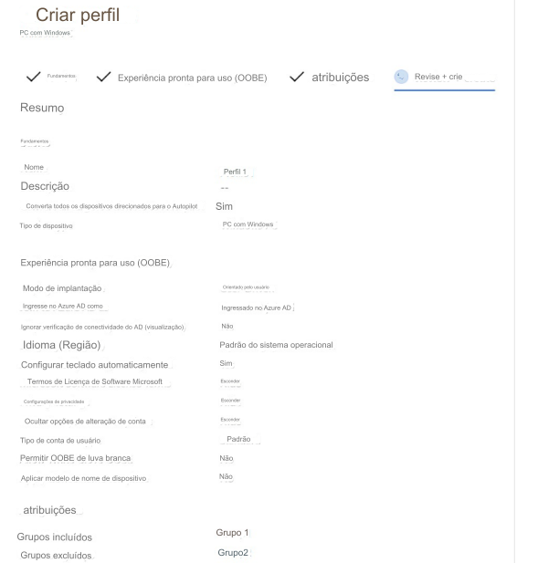

4- PONTO DE ACESSO -
Estudo de caso -
Visão geral -
ADatum Corporation é uma empresa de consultoria com sede em Montreal e filiais em
Seattle e Nova York.
ADatum tem uma assinatura do Microsoft 365 E5.
Ambiente -
Ambiente de rede -
A rede contém um domínio local do Active Directory chamado adatum.com.
O domínio contém os
servidores mostrados na tabela a seguir.

ADatum tem um locatário híbrido do Azure AD chamado adatum.com.
Usuários e grupos -
O locatário adatum.com contém os usuários mostrados na tabela a seguir.

Todos os usuários recebem uma licença do Microsoft Office 365 e uma licença Enterprise Mobility + Security E3.
O Enterprise State Roaming está habilitado para Grupo1 e GrupoA.
O Grupo1 e o Grupo2 têm um tipo de associação Atribuído.
Dispositivos -
ADatum possui os dispositivos Windows 10 mostrados na tabela a seguir.
Os dispositivos Windows 10 estão associados ao Azure AD e inscritos no Microsoft Intune.
Os
dispositivos Windows 10 são configurados conforme mostrado na tabela a seguir.

Os dispositivos Windows 10 estão associados ao Azure AD e inscritos no Microsoft Intune.
Os
dispositivos Windows 10 são configurados conforme mostrado na tabela a seguir.

Todos os dispositivos ingressados no Azure AD têm um arquivo executável chamado C:\AppA.exe e uma pasta chamada
D:\Folder1.
Configuração do Microsoft Intune -
O Microsoft Intune tem as políticas de conformidade mostradas na tabela a seguir.


As configurações de Inscrição Automática possuem as seguintes configurações:
Escopo do usuário MDM: GrupoA -
Escopo do usuário MAM: GrupoB -
Você tem um perfil de configuração do Endpoint Protection que tem o seguinte acesso controlado à pasta
configurações:
Nome: Proteção1 -
Proteção de pasta: Ativar -
Lista de aplicativos que têm acesso a pastas protegidas: C:\*\AppA.exe
Lista de pastas adicionais que precisam ser protegidas: D:\Folder1
Atribuições:
Grupos incluídos: Grupo2, GrupoB -
Configuração do piloto automático do Windows -
ADatum tem um perfil de implantação do Windows Autopilot configurado conforme mostrado na exposição a seguir.

Currently, there are no devices deployed by using Windows Autopilot.
The Intune connector for Active Directory is installed on Server1.
Requirements -
Planned Changes -
ADatum plans to implement the following changes:
Purchase a new Windows 10 device named Device6 and enroll the device in Intune
New computers will be deployed by using Windows Autopilot and will be hybrid Azure AD joined.
Deployed a network boundary configuration profile that will have the following settings:
Name: Boundary1 -
Network boundary: 192.168.1.0/24
Scope tags: Tag1 -
Assignments:
Included groups: Group1, Group2 -
Deploy two VPN configuration profiles named Connection1 and Connection2 that will have the following
settings:
Name: Connection1 -
Connection name: VPN1 -
Connection type: L2TP -
Assignments:
Included groups: Group1, Group2, GroupA
Excluded groups: --
Name: Connection2 -
Connection name: VPN2 -
Connection type: IKEv2 -
Assignments:
Included groups: GroupA -
Excluded groups: GroupB -
Technical Requirements -
ADatum must meet the following technical requirements:
Users in GroupA must be able to deploy new computers.
Administrative effort must be minimized.
You implement Boundary1 based on the planned changes.
Which devices have a network boundary of 192.168.1.0/24 applied?